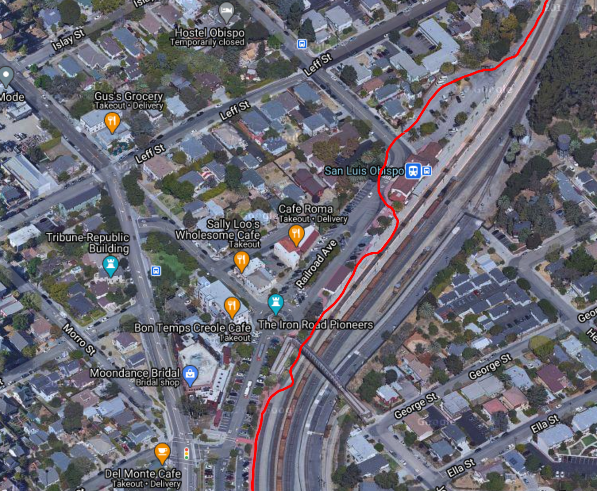
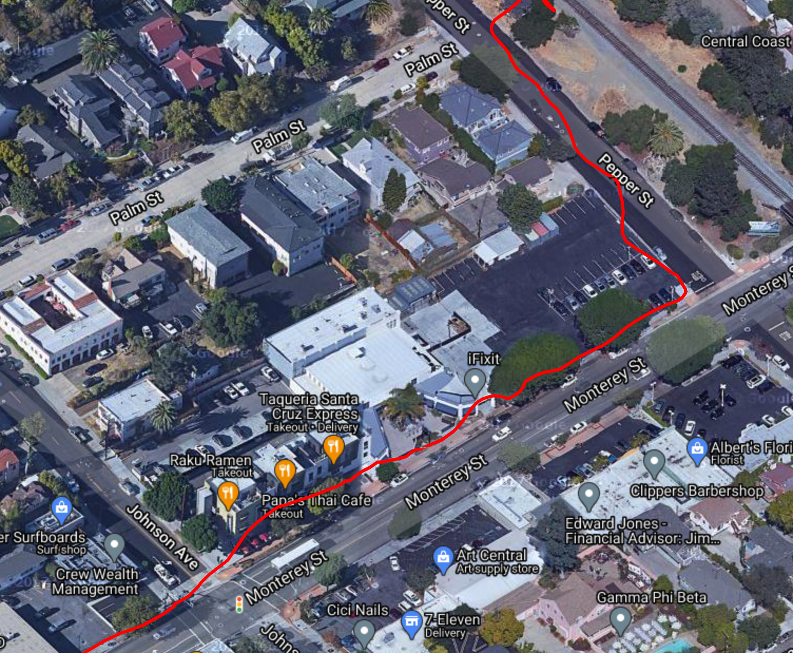
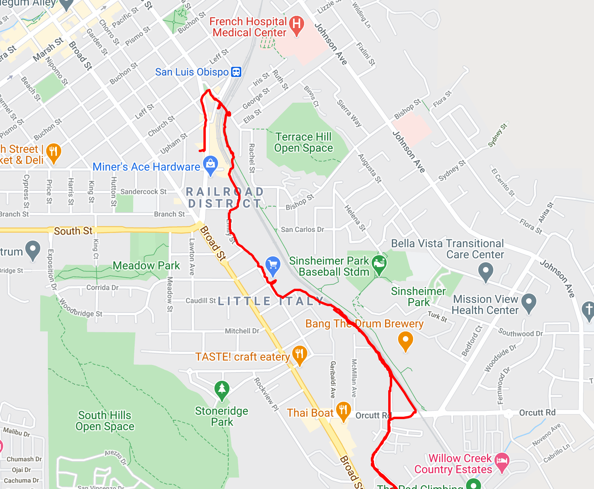
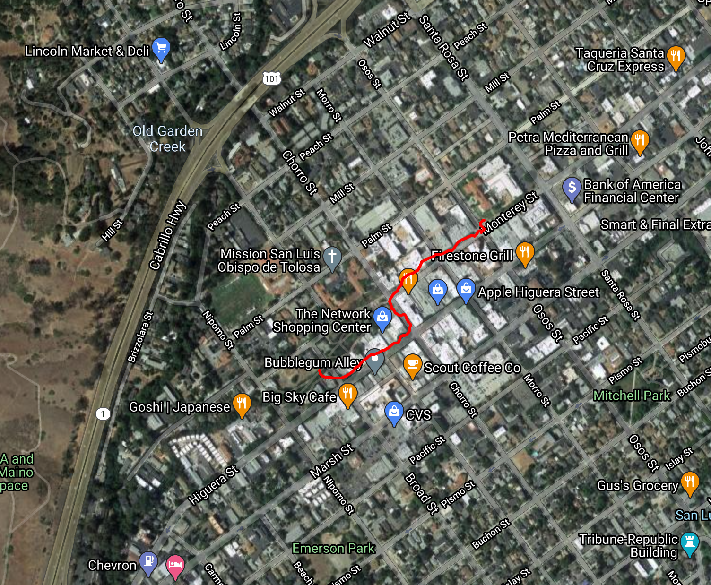
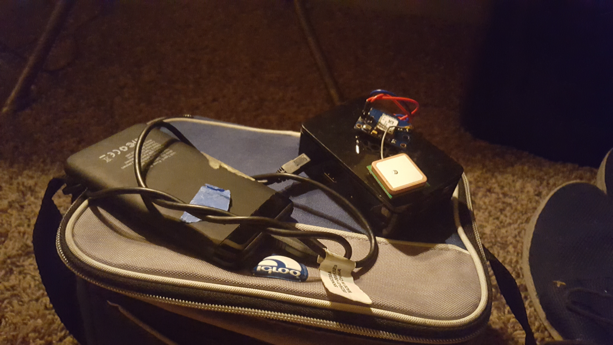
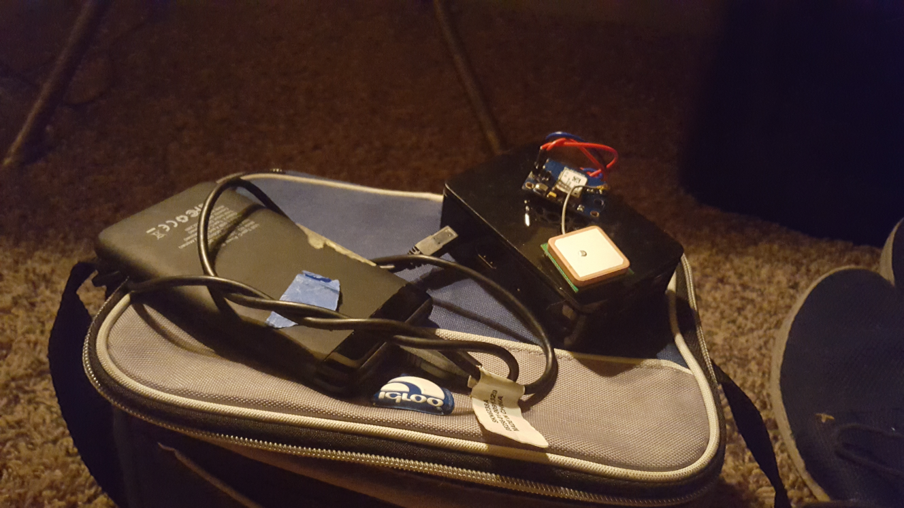

walkmap
Create a lunchbox-carrried GPS tracker using a Raspberry Pi and about $30 in spare parts. If you want to view the state and location of the device in real time, then you will also need a cell phone to tether.





 

About:
This project allows you to build a battery-powered Raspberry Pi that can be precisely located (within about 11 inches) anywhere on the planet that your cell phone functions.
Initially I only used an Android phone, DropBear SSH (for SCP), and GPSLogger, with WiFi tethering turned on. The Raspberry Pi, plugged into a cell phone battery pack, connected and SCP'd the coordinate data files from the phone. The problem with this method is that you must (with all the free GPS logging apps I could find anyway) manually hit stop and finalize the map every time you wanted to generate a new map file.
I then gave in and spent $29 at the Radio Shack by Laguna on an Arduino NEO-6M GPS chip. It comes with an antenna as well. You can definitely find them for more like $12 on the toxic miasma that is Amazon for closer to $13. The beauty of this is that you do not have to setup DropBear SSH and then use SCP to get all files containing the coordinates off of the Android phone. It triples your battery life as well since the Android does not have to run the SSH server or the GPS, just act as a Wifi hotspot.
One thing to note: if you end up buying a NEO-6M, you will will need to solder the pins to the board. I tried for several hours to get it working with just jumper cables and frustration and was never able to get it to give me reliable enough dumps from its serial port to load with an NMEA reader until I soldered (poorly) the pins to the GPS receiver board itself.
The maps in the pictures here are rendered using the Google Maps API - it's free for your first 2,000 renders and pretty cheap after that. NOTE: You are very specifically looking for the Google Maps Javascript API - even though all code in this project is written in Python.
The Python library gmplot makes requests against this API in order to render these maps. Therefore, you will need a Google account for this, however, you don't need to pay for anything.
If you don't have a NEO-6M GPS:, then you will need an Android phone and DropBear SSH. The Raspberry Pi is then tethered to the internet connection of this phone. I used an application called GPSLogger for this; then it is simply a matter of SCP'ing the GPS data from the phone. I found this to be a really clunky method of doing things, and so I ended up buying the NEO-6M.
If you get a NEO-6M, the initial boot up of the chip took - for me, under open sky, more than an hour. This is a thing that connects to multiple satellites for the same price as a large pizza, and it takes a little while to geolocate itself. Also, it comes with a connectible CMOS battery that allows it to save its coordinates - and time, and therefore calculate where it should belooking for satellites every time it is turned on after this.
A Diatribe About GPS:
Many people know that "GPS" is a thing that lets you navigate from point A to point B; most people know that it stands for Global Positioning System, and involves satellites. But what is it really?
The United States Military (Space Force, specifically) operates a constellation of simple satellites, such that if one stands at any point on Earth with an unobstructed view of the sky, at least 4 GPS satellites are overhead and in range, always.
These satellites all carry atomic clocks that are syncronized with each other. For the purpose of this rant, your phone marks down what time it is, sends a request to the satellites for the time. The satellites receive the request and send back the precise time. Because radio waves move at the speed of light, and these satellites are at different distances relative to the GPS device, the time it takes for the request to be sent, and the answer returned, will vary. Since the satellites are aware of their location, the exact distance to each satellite from the GPS unit can be calculated, forming the hypoteneuse for triangulation. A total of 24 satellites is enough to give global coverage.
The Russian government operates a similar service, GLOSNASS, that is truly global; most GPS receivers will switch to GLOSNASS if GPS is not available (such as the NEO-6M). The Chinese government is nearly finished with their positioning system, BaiDu, planning to go fully operational by Jan 1, 2021.
These satellites are physically about 8' x 6' x 8', roughly the size of a minivan. The "wings" on a satellite are actually solar panels; in the case of GPS the entire system is solar powered. The main container of the satellite itself holds the atomic clock, radio equipment, and computer equipment to operate it. They cost about $125,000,000 to build.
GPS is free to use and is truly global, such that if one needs directions from Paris to Warsaw, an American (or Russian) satellite is performing the location work. The US military allows anyone to use GPS for any purpose, in exchange you for informing the military of your location within about a foot in real time.
GPS is common in many devices too, since it requires very little power to operate. Nearly every cell phone manufactured in the last 15 years has GPS built in; high-class cars, such as BMW and Mercedes, even have GPS built into the key fob in case you lose it. Other common places for an embedded GPS chip are life vests and parachutes.
GPS operates in the Ultra High Frequency range, meaning that it is essentially line-of-sight only; a GPS receiver will not work in a tunnel or a cave due to the poor penetration of these waves towards hard / dense objects. It is, however, useful to burn a few weekends during a global pandemic.
Materials:
- Raspberry Pi 3 B+ / Raspberry Pi 4
- Cell phone (must be Android if you don't have the NEO-6M)
- Cell phone battery charger (one with a USB plug)
If you want to render the location of the Raspberry Pi on a web page in real time, then you will need:
- NEO-6M GPS receiver (see above for link)
- Soldering Iron / Solder (to solder the pins to the NEO-6M)
- 3x Female-to-Female Jumper Cables
- Cheap VPS or externally routable IP
Total cost of all materials: about $90, excluding the cell phone.
How To:
Without NEO-6M:
Technically you do not need to take the Raspberry Pi with you if you do not want upload or use the data in any way while you are out and about. I always brought the Raspberry Pi and a laptop along in order to render the maps while I was out, to test things. If you don't care, then download GPSLogger in the Android store, hit Track at the bottom right, and then skip to step 6
- Turn on the wifi hotspot on the phone.
- Use
raspi-configto connect the Raspberry Pi to the phone's hotspot. - Install
GPSLoggeron the Android phone. - Install
Dropbear SSHon the Android phone. - Start Dropbear SSH on the phone
- Start GPSLogger (tap tracks at the bottom right)
- When ready to halt collection and complete a segment of the trip, end the tracking with GPSLogger and then upload the data.
- Using DropBear, connect to the phone's wifi network and scp the contents of /sdcard/GPSLogger to the Raspberry Pi
- Run make_map.py <gpsdata.txt>
- Open the created map in a browser
With NEO-6M:
- Solder the baseboard pins to the NEO-6M board.
- Using the jumper cables, connect the pins to the GPIO headers on the Raspberry PI in the following configuration:
VCC -> 3.3V (top left pin, GPIO header)
TX -> GPIO15/RXD0 (from the top right, pin #5)
GND -> Ground (from the top right, pin #7 - 2 down from the TX pin) - Attach the NEO-6M CMOS battery very carefully to the small pin on the board.
- SSH to the Raspberry Pi and run raspi-config. In Advanced Options, select Serial. Hit no on Enable serial console (this is very important). Hit yes on Enable serial port.
- Run
apt-get -y install gps gps-clients python3 python3-pip, followed bypip3 install gmplot - Take the GPS module (connected to the Raspberry Pi) either outside or to a window, where it has a clear, unobstructed view of the sky.
- Wait until the Lock light flashes. Note that it is frustrating as the board gives no indication that it has power until it has locked on; leave it alone for at least an hour and it will lock. As long as the CMOS battery is connected after this, it will lock in a few seconds.
- Open a remote forwarded SSH tunnel to the VPS or externally routable IP.
- On the VPS, start the
gps-web-interface.service - On the VPS, start
nginx
Start services:
- Verify that you can connect from localhost -> VPS -> Raspi
- Verify that you can connect from Raspi -> VPS
- On the hotspot phone, using Termius or similar application, connect to the Raspi, and run:
systemctl start gps - Connect to the VPS and hit the Gather Data Button. You should get a map with the coordinates of the device. Move the device to a new location and hit this button again, and you should have a line between the traversed points.